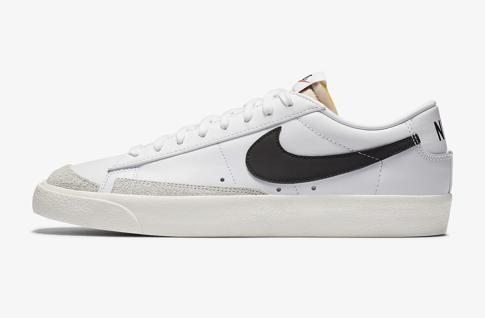

История кроссовок Nike Blazer
В начале 70-х компания Blue Ribbon Sports меняет название на Nike и начинает своими силами производить кроссовки. В это время баскетбол становится перспективным видом спорта, Билл Бауэрман и Фил Найт понимают потребность в выпуске подходящих для игры моделей. В 1972 году Nike представляет свои первые баскетбольные кроссовки под названием Bruin, а спустя год выходит их обновленная, высокая версия — Nike Blazer. Свое название кроссовки получили в честь баскетбольной команды «Портленд Блэйзерс», за успехами которой следили основатели Nike. Это были кожаные кеды средней высоты с подошвой из вулканизированной резины и кричащим лого. Нет ничего проще, но по меркам 70-х это была экипировка профессионального уровня.
Модели кроссовок Nike Blazer


Nike Blazer Low